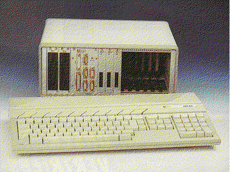

Previous
Next
TOC
Der IBP 190 ST, der 19 Zoll Atari

Den kleinsten ST der Welt hat vermutlich die Firma IBP jemals gebaut.
Um ein für industrielle Anwender, für die ein Plastikkasten mit der
Aufschrift ATARI grundsätzlich nicht in Frage kommt, geeignetes Sys-
tem zu schaffen, hat man damals in mühseliger Kleinarbeit das ganze
Platinenlayout des Atari ST neu entworfen und den ganzen Rechner auf
drei Europakarten zusammenschrumpfen lassen. Damit das ganze auch
wirklich für industrielle Zwecke brauchbar ist, wurde auch gleich
eine Buserweiterung für Eurobus-Karten eingebaut. Damit ist es mög-
lich, praktisch beliebige I/O-Karten, zum beispiel für Steuerungs-
zwecke, an den ST anzuschliessen. Da der Eurobus ein Standardbus ist
sind auch eine Menge Erweiterungskarten verfügbar.
Im abgebildeten Rechnersystem, bei dem das Rechnermodul ein paar
Zentimeter in einem 19'-Gehäuse mit zwei Höheneinheiten einnimmt,
sind drei I/O-Karten eingebaut:
Je eine digitale Ein- und Ausgabekarte mit vierundzwanzig bzw.
sechzehn Kanälen und eine achtkanalige 12-Bit-A/D-Wandler Karte mit
einer Wandlungsrate von 30 Mikrosekunden.
Zusätzlich vorhanden sind zwei Floppy-Laufwerke im Slimlineausfüh-
rung. Alles zusammen brauchen diese sechs Einschübe nicht einmal
zwei drittel der Gehäusebreite.
Von den insgesamt 14 Steckerleisten, die in einem 19"-Einschub Platz
finden, sind noch sechs frei. Das Gehäuse ist um einiges tiefer als
eine Europa-Karte (160 * 100 mm), da im Hintergrund, hinter der Euro-
bus-Platine, ein leistungsfähiges Netzteil eingebaut ist. Der Rechner
braucht übrigens nur eine einfache 5 Volt-Spannungsversorgung bei
einem Strombedarf von ca. 1.6 Ampere. Für den harten Einsatz in der
rauhen Wirklichkeit war das extrem massive und schwere Metallgehäuse
bestens geeignet.
weiterblättern
Kapitel Der IBP 190 ST, der 19 Zoll Atari, Seite 1